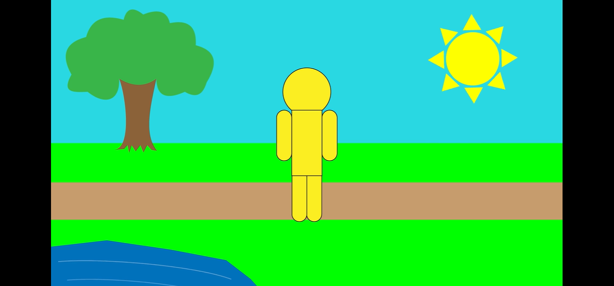
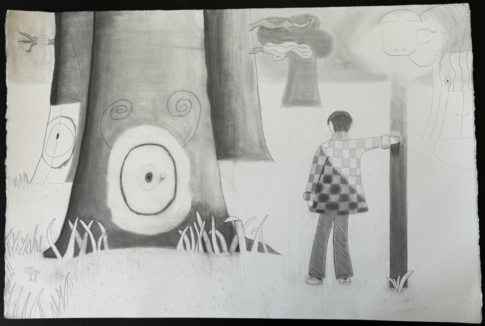
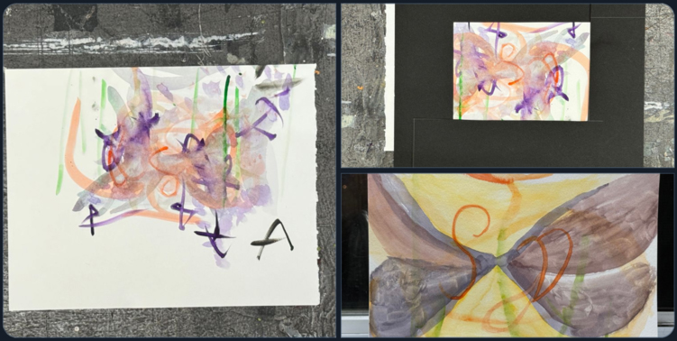
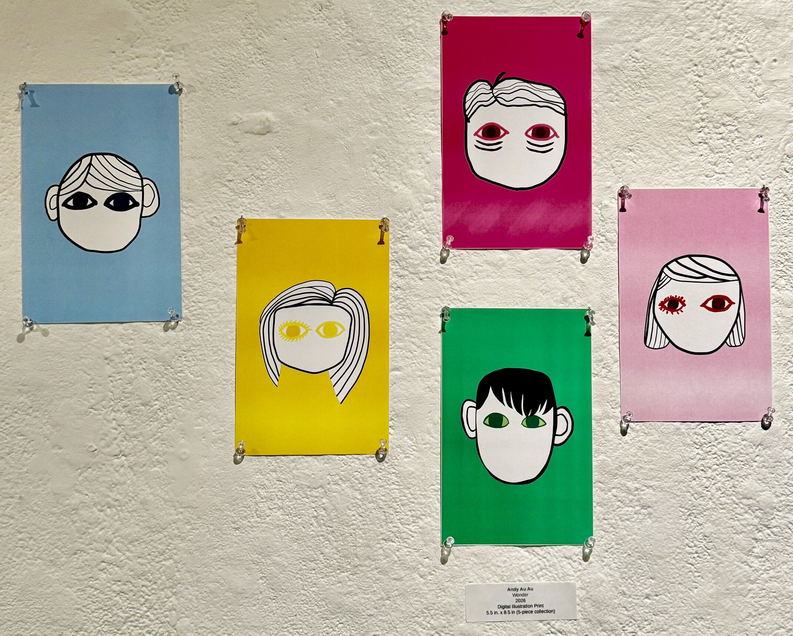
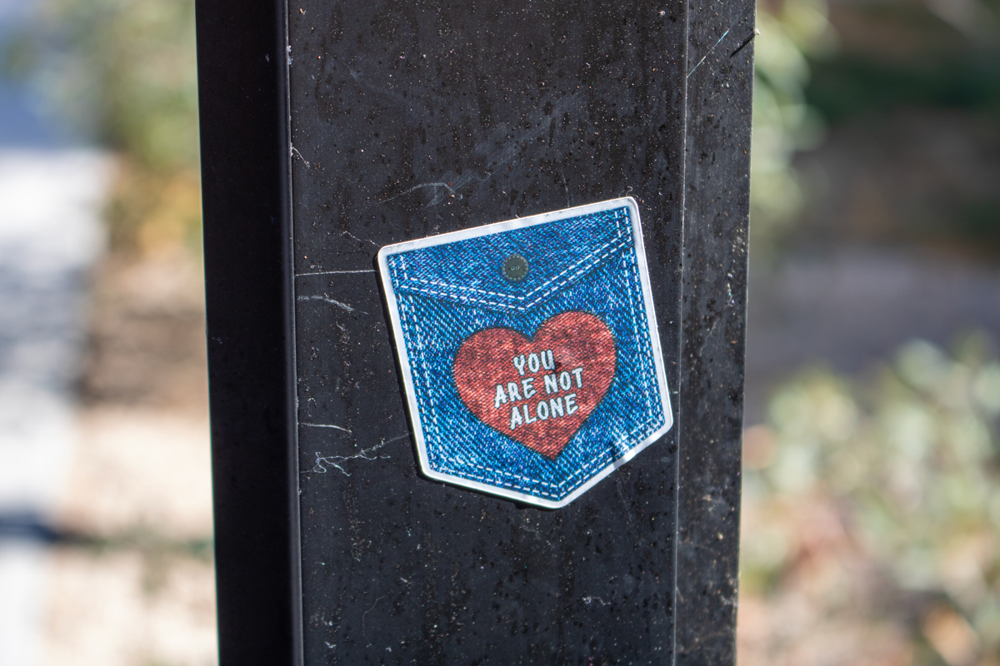
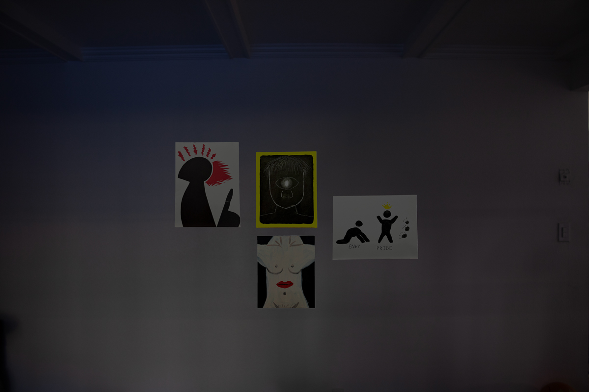
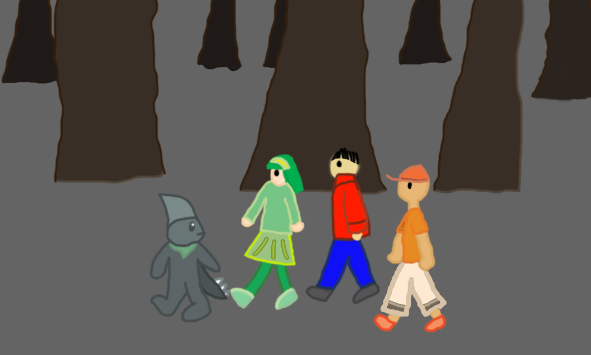
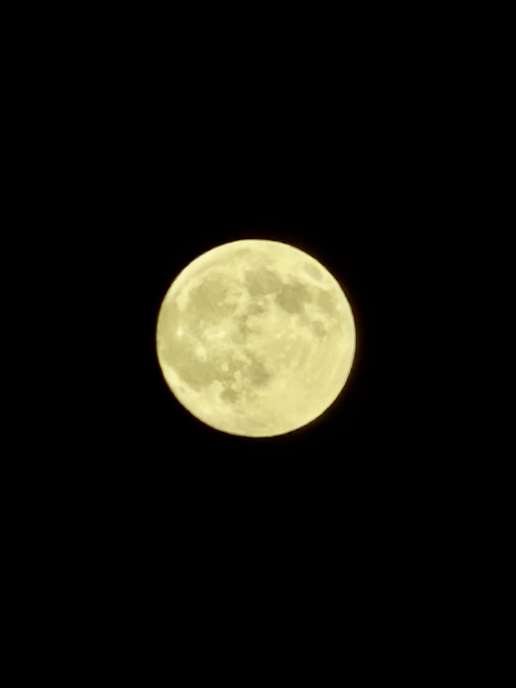

ᯓ★About Me
Hello, and welcome to my first website! I commit to digital media works such as graphic design and illustrations. I even do traditional arts such as drawing and painting.
My Work


Mental Health Animation (2022)
The final project from a digital video course is about learning to cope with stress during these times of hardships in the pandemic using Adobe Creative Cloud software: First Adobe Illustrator, Next is incorporating those designs into Adobe After Effects, then export to Media Encoder to make an MP4 video.


Otherworld Doorways
A project involved in demonstracting four sketches in four different drawing mediums. Graphic piece in smudges, hatches and crosshatches, and density of a young boy near a lamppole of a forest with trees with target-like circles as a doorway connecting to a subconsious or the real world.


[Fleeting Tranquility]
Blind watercolor painting is cropped with a black border to repaint into an actual watercolor painting.


Au Wonder
Five illustrated portraits, sharing a likliness based on the book cover Wonder, showing how to percieve one's self beyond appearances and disabilities.


YOU ARE NOT ALONE (2024)
A photo taken with a camera on an indie-made sticker on a steel post that promotes encouragement of mental health.


Deadly Sin(s)
[NSFW Work for 18+ Mature Audiences]


Storyboard Pilot Project
My first digital video project using Adobe software applied to drawn storyboards to create the narrative. Also digitally drawn with help from Sketchbook app and Adobe Illustration.


Harvest Moon
Taken from my Apple IPhone 17 PRO MAX in studying and tracking the illumination of the current moon phase by day. The term for this is coined for nearing the autumn equinox at September.
Contact Me
Email: aa41659@gmail.com